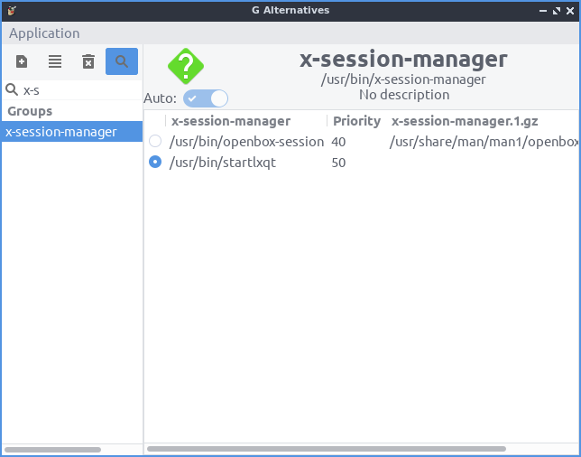

Chapter 3.2.17 Alternatives Configurator¶
Alternatives Configuartor configures your alternative programs like your default web browser and more applications if you have multiple programs installed.
Usage¶
To select the command to choose your alternatives for the default program for something such as your default text editor if you have multiple programs installed by left clicking what to be the alternative on the left sidebar under the column Groups. On the right side of the window has a radio button to choose which editor you want to use. Left click on the button to change to the new default program. When you change your alternative you will input your password to authenticate to change your default application.
To show a search for the different application groups press the button that looks like a magnifying glass. Type the results in the field next to the magnifying glass and then see the results on the left and side column.
Version¶
Denios-OS ships with version 1.0.8 of Alternatives Configurator.
Screenshot¶
How to Launch¶
To launch Alternatives Configurator from the menu or run
galternatives
from the command line. The icon for Alternatives Configurator is a dark gray circle with an orange G with an a inside.